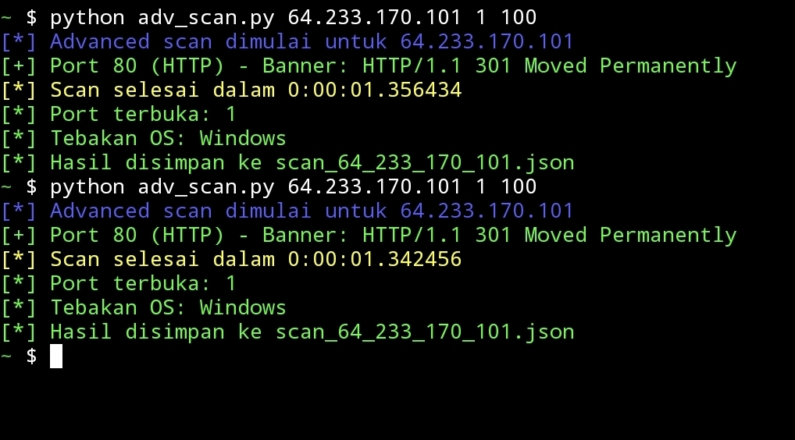
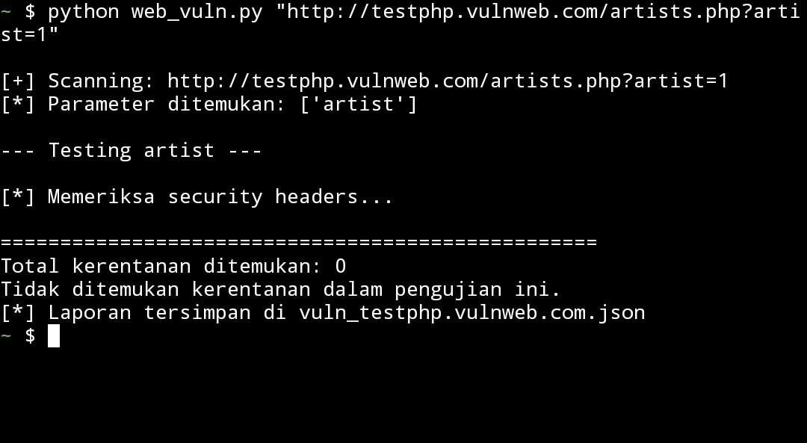
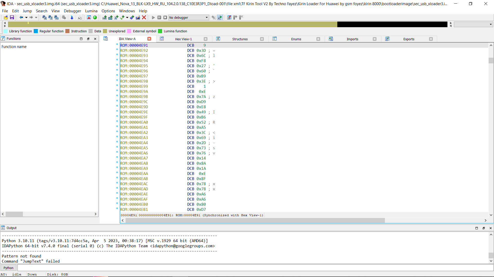

.jpeg)
Awal Marudut Gultom
Cyber Security Enthusiast | Python Developer | Network Engineer
Menganalisis kerentanan, membangun tools keamanan, dan reverse engineering untuk menemukan celah sistem secara etis.
About Me
Saya adalah seorang cybersecurity researcher & Python developer otodidak. Berpengalaman dalam pengujian penetrasi, network scanning, serta analisis malware/firmware menggunakan IDA Pro dan Ghidra. Saya memiliki ketertarikan tinggi pada reverse engineering dan vulnerability discovery. Saat ini saya fokus mengembangkan tools keamanan berbasis Python dan mempelajari mekanisme enkripsi pada firmware perangkat.
Technical Skills
- Python (Socket, Requests, Threading, Crypto)
- IDA Pro / Ghidra (Static Analysis)
- Web Vulnerability Scanning (SQLi, XSS)
- Network Port Scanner
- Reverse Engineering (AES encrypted binary)
- Linux / Kali Linux
- Network Engineering (L2/L3)
- Firmware Analysis (Huawei)
- Ethical Hacking Lab
Cybersecurity Projects

Advanced Port Scanner + Banner
Multi‑thread Python scanner untuk mendeteksi port terbuka dan grabbing banner service. Digunakan di lab Metasploitable 2.
Pythonsocket
Web Vulnerability Scanner
Mendeteksi SQLi, XSS reflected, Path Traversal. Payload custom.
Pythonrequests
Analisis Firmware Huawei (AES)
Reverse engineering xloader & fastboot terenkripsi AES menggunakan IDA Pro. Identifikasi header dan rutin dekripsi.
IDA ProAES📹 Demo: Port Scanning di Lab
Menjalankan port scanner multi‑thread terhadap Metasploitable 2.
📹 Demo: Malware Analysis (Edukasi)
tujuan edukasi di lab sendiri.